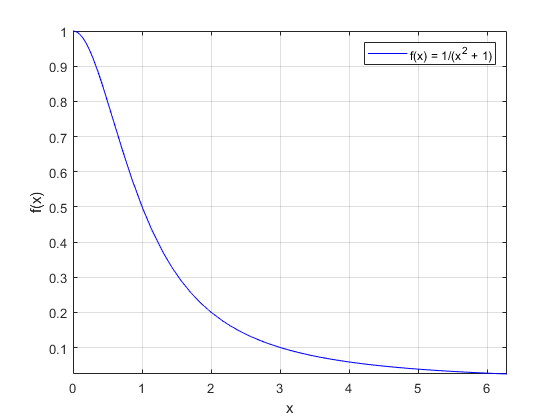
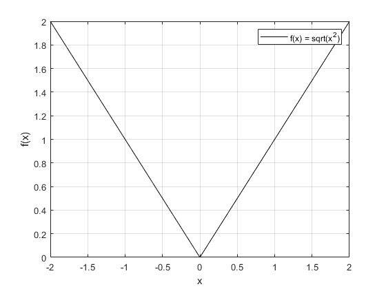
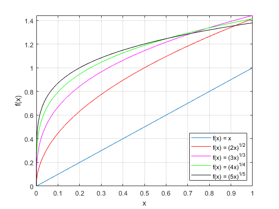

Exercice 3, Graphe de fonctions (3 pts)
Contents
Pour cet exercice, on va majoritairement utiliser la fonction fplot qui permet de dessiner le graph d'une fonction qu'on a déclaré comme une sorte de "lambda", sur un intervalle donné.
3.1)
axis equal; interv_1 = [0, 2 * pi]; @(x) (1 ./ (x.^2 + 1)); fplot(f_1, interv_1, '-b'); grid on; xlabel('x'); ylabel('f(x)'); legend('f(x) = 1/(x^2 + 1)');
3.2)
interv_2 = [-2 2]; f_2 = @(x) (sqrt(x.^2)); fplot(f_2, interv_2, '-k') grid on; legend('f(x) = sqrt(x^2)'); xlabel('x'); ylabel('f(x)');
3.3)
interv_3 = [0 1]; fplot(@(x) (x), interv_3, '-'); % pour n = 1, pas besoin d'utiliser nthroot hold on; grid on; xlabel('x'); ylabel('f(x)'); for n = 1:5 f = @(x) (nthroot(n * x, n)); switch n case 2 fplot(f, interv_3, '-r') case 3 fplot(f, interv_3, '-m') case 4 fplot(f, interv_3, '-g') case 5 fplot(f, interv_3, '-k') end drawnow end legend({'f(x) = x', 'f(x) = (2x)^{1/2}', 'f(x) = (3x)^{1/3}', ... 'f(x) = (4x)^{1/4}', 'f(x) = (5x)^{1/5}'}, 'Location','southeast'); hold off;